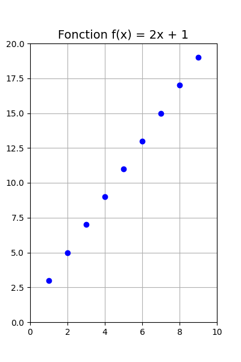

15. Boucle for avec pyplot¶
Voici l’exemple de boucle while qui place des points sur une figure selon la fonction \(f(x) = 2x + 1\), qui a été
réécrit pour utiliser une boucle for à la place. Le résultat est le même.
Mais il y a une différence fondamentale :
une boucle for est utilisée pour itérer sur une plage de valeurs de x allant de 1 à 9 (car range(1, 10)
génère des nombres de 1 à 9 inclusivement), tandis que la première version utilisait une boucle while et générait
des points jusqu’à ce que la valeur de y dépasse 20. Avec le for, on décide d’avance combien de points vont être
placés sur la figure en donnant les bons arguments à la fonction range, mais avec le while, on en sait pas
exactement combien de points vont être placés sur la figure parce que la décision d’arrêter est basée sur la valeur de
y et non le nombre de points. Dans cet exemple, les arguments de range ont été choisis expressément pour obtenir
le même résultat.
import matplotlib.pyplot as plt
# Initialisation de la figure
plt.figure(figsize=(4, 6))
# Définir la fonction f(x)
def f(x):
return 2 * x + 1
# Boucle pour dessiner les points
for x in range(1, 10):
y = f(x)
plt.plot(x, y, "ob") # Dessiner le point (x, y)
# Ajouter des labels et un titre
plt.title("Fonction f(x) = 2x + 1", fontsize=14)
plt.xlim(0, 10)
plt.ylim(0, 20)
# Afficher la grille et la figure
plt.grid(True)
plt.show()

Utilisation de l’IA
Page rédigée en partie avec l’aide d’un assistant IA, principalement à l’aide de Perplexity AI, avec le LLM Claude 3.5 Sonnet. L’IA a été utilisée pour générer des explications, des exemples et/ou des suggestions de structure. Toutes les informations ont été vérifiées, éditées et complétées par l’auteur.